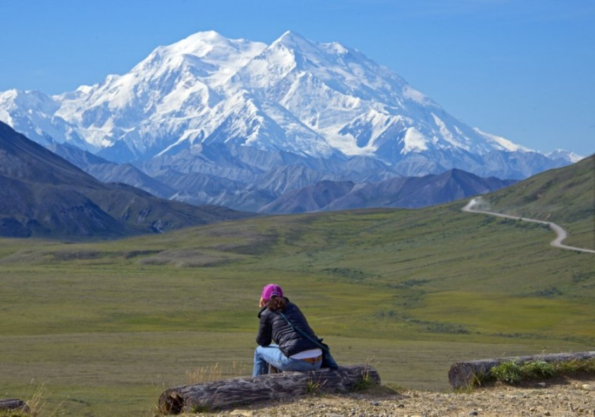
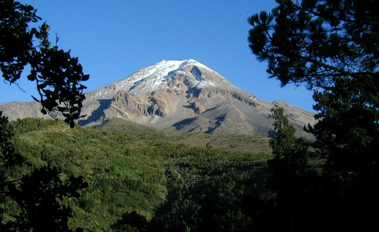
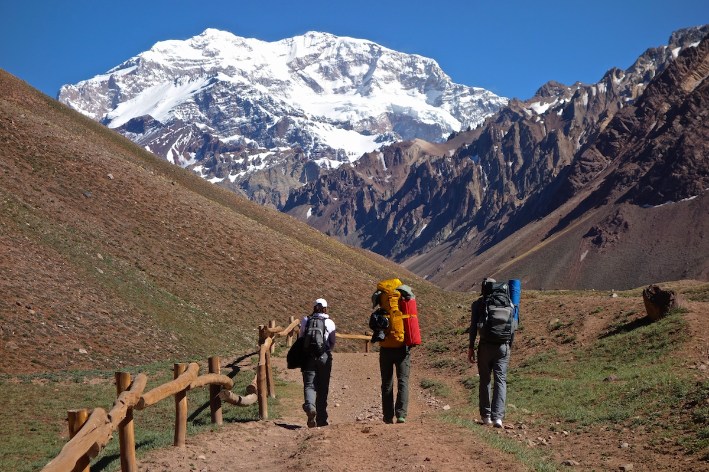
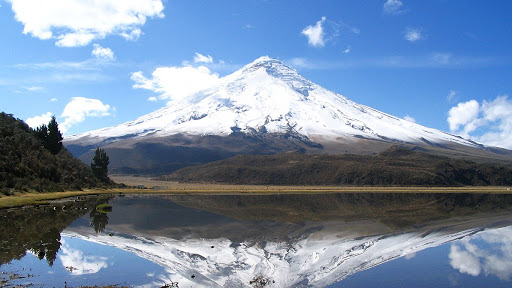
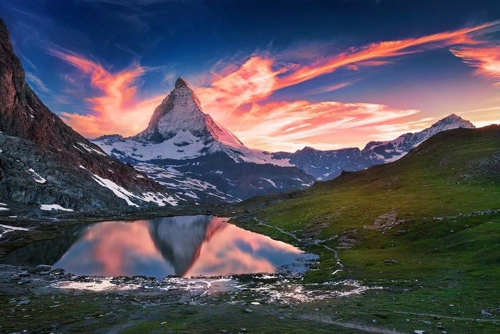
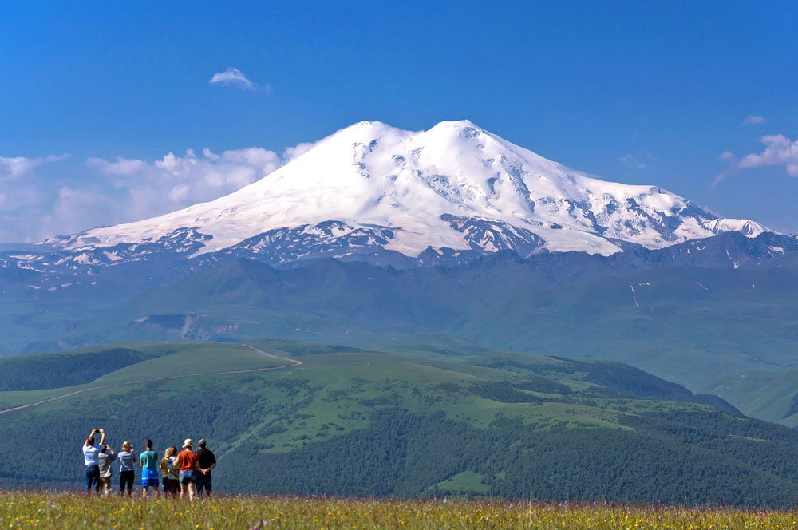
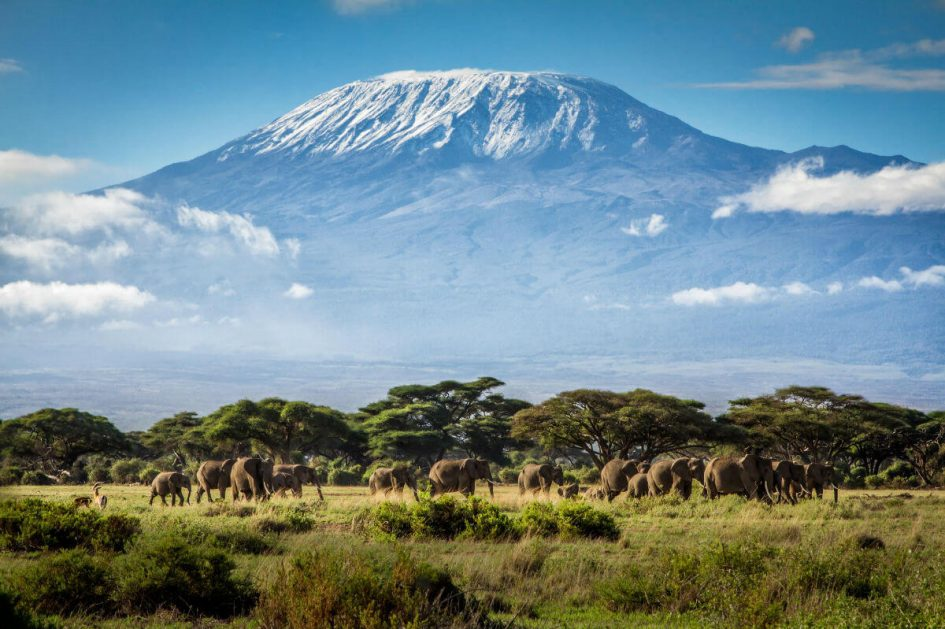
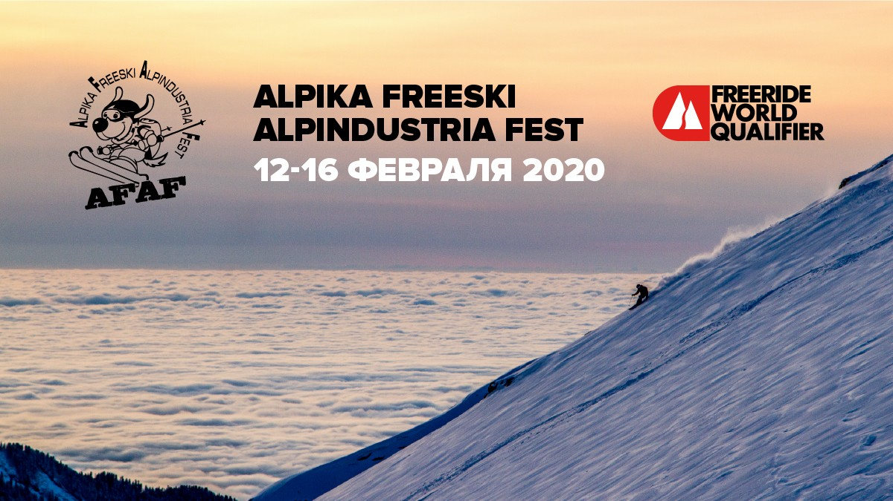
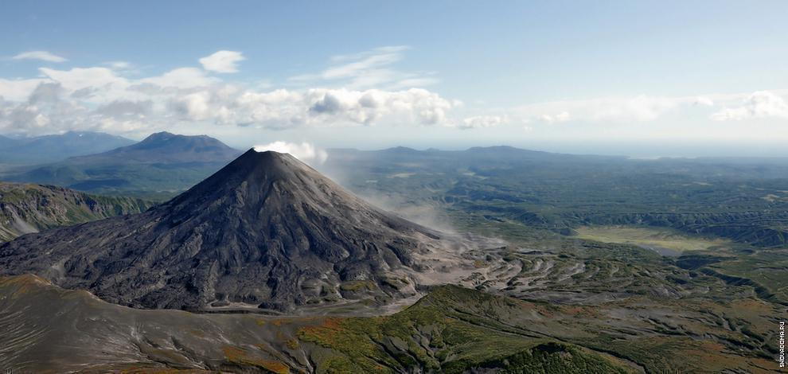

Мы являемся экспертами в организации альпинистских туров для опытных альпинистов
и для новичков. Вы можете доверить нам полную организацию вашего приключения от А до Я
и быть уверенными в качестве и безопасности восхождения.
Наша компания предоставляет все необходимое: консультацию по выбору тура, перелет,
визу, бронирование проживания, питание, оборудование, необходимое для восхождения,
опытных гидов, полное сопровождение.

Денали — двуглавая гора на юге центральной части Аляски, высочайшая гора Северной Америки.
Находится в центре национального парка Денали. Конгресс США переименовал гору в 1896 году,
присвоив ей имя Мак-Кинли в честь 25-го президента Соединённых Штатов Америки.

Орисаба или Ситлалтепетль — действующий вулкан в Мексике, самая высокая вершина страны.
Третья по превышению в Северной Америке. Её высота составляет 5636 м по данным GPS и
5 611 м по данным системы INEGI.

Аконка́гуа — высочайшая вершина в Андах, расположена на территории аргентинской провинции
Мендоса в 15 км от границы с Чили. Её высота составляет 6960,8 м над уровнем моря.
Высочайшая вершина в мире за пределами Азии, также она является высочайшей вершиной Аргентины,
Южной Америки, западного и южного полушарий.

Котопа́хи — вторая по высоте вершина Эквадора и самый высокий действующий вулкан страны.
Котопахи входит также и в число самых высоких активных вулканов планеты. Вместе с вершинами
Чимборасо, Уаскаран и Килиманджаро Котопахи находится дальше от центра Земли, чем Эверест.

Ма́ттерхорн — вершина в Пеннинских Альпах на границе Швейцарии в кантоне Вале и Италии в
провинции Валле-д’Аоста. Высота вершины составляет 4478 метров над уровнем моря. Маттерхорн
имеет примечательную четырёхгранную пирамидальную форму со стенами, обращёнными по сторонам
света.

Эльбру́с — стратовулкан на Кавказе — самая высокая горная вершина России и Европы при условии
проведения границы между Европой и Азией по Главному Кавказскому хребту или южнее. Эльбрус
включён в список высочайших вершин частей света «Семь вершин».

Килиманджа́ро — высочайший стратовулкан Африки, находящийся на северо-востоке Танзании,
высочайшая точка континента. C 1902 по 1918 годы назывался Вершина Кайзера Вильгельма.
Килиманджаро возвышается над плоскогорьем Масаи, которое расположено на высоте 900
метров над уровнем моря.
Как подготовиться к первому восхождению на вершину
Перед тем, как отправиться на покорение вершины горы, нужно не только привести
в порядок свою физическую форму, но и тренировать выносливость, дыхательную и
сердечно-сосудистую системы. Именно на них приходится максимальная нагрузка на
высоте. Поэтому из-за недостаточной подготовки вы можете сойти на полпути. Чтобы
этого не случилось, занимайтесь плаванием, бегом, велосипедом, кардитренировками.
Как должны проходить тренировки? В первую очередь, тренировки должны проходить
постоянно, эффективно и интенсивно. Кроме того, нагрузка постепенно должна
увеличиваться. В случае с бегом обязательно делать это с учетом пульса. Грамотно
спланированный бег позволит не только сбросить вес, но и укрепит сердечную мышцу.
При беге с высоким пульсом вы позволите организму привыкнуть к недостатку
кислорода - то, с чем обязательно встретитесь в горах. Для укрепления физической
подготовки и повышения выносливости также бегайте в горку или в быстром темпе
поднимайтесь по лестницам. И не забудьте отдохнуть за неделю до путешествия!

Фестиваль Alpika Freeski Alpindustria Fest
13-16 февраля 2020 г. сильнейшие горнолыжники России встретятся на трассах Альпики,
чтобы принять участие в зимнем фестивале «АльпИндустрии» — Alpika Freeski Alpindustria Fest.
4 дня высокогорного адреналина, лекций и apres-ski вечеринкок! Кроме того, все участники
фестиваля, катающиеся вне трасс, смогут посетить практические занятия по лавинной
безопасности и альпинизму от Ассоциации Горных Гидов России.
Для участников приготовили 3 типа соревнований:
Фрирайд
Во время феста пройдет этап серии соревнований Freeride World Qualifier. Это состязание
для профессиональных фрирайдеров, поэтому ждём настоящего экшена. Пухляк, берегись!
Ски-альпинизм
На фестивале AFAF пройдёт открытый Чемпионат г. Москвы по ски-альпинизму в индивидуальной
и командной гонке. В России этот вид спорта не очень распространен, так что у вас будет
шанс открыть возможно новое для себя направление.
Гонка профессионалов
Очень интересная и захватывающая гонка, для участия в которой нужно обладать альпинистской
базой знаний и умений, а также уметь работать с лавинным снаряжением и напарником на
сложном снежном рельефе. Гонка для настоящих экспертов в своем деле!

Особенности альпинизма на Камчатке.
Все о Ключевой сопке
Камчатка — это мир вулканов, больших и маленьких, потухших на века и действующих. На территории
этого края расположились более трех сотен вулканов. Активными являются около тридцати, однако самым
удивительным и мощным является только лишь один — Ключевая сопка.
Место удивительное и заснеженное. Другой мир, другое измерение. В этом месте люди ощущают все
величие окружающей природы, ее неповторимую красоту и неуемную мощь.
Снежная гора с горячим «сердцем», которая, время от времени выплескивает свою «страсть» в виде
извержений или даже взрывов раскаленной лавой.
Это место привлекает множество туристов. Они не пугаются ни трудной дороги, ни сурового климата,
ведь мало кто откажется своими глазами увидеть такое величайшее природное чудо. Этот мощный вулкан
на Камчатке забыть просто невозможно, он остается в памяти навсегда.
Местные жители рассказывают различные легенды об этом месте, но самой распространенной является
легенда о том, что внутри вулкана живут духи предков, и когда из вулкана валит дым, местные жители
говорят, что они топят свои жилища.
Что происходит с человеком на высоте больше 3000
метров?
Нужна помощь с выбором тура?
Заполните форму, наш менеджер свяжется с вами
в ближайшее время и подберет подходящий тур
Нажимая на кнопку вы соглашаетесь с условиями обработки персональных данных